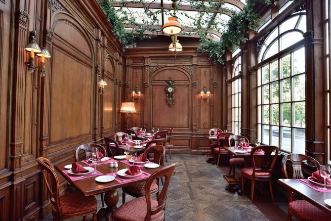

«Турандот» на Тверском бульваре расположен в современном дворце, сочетающем восточную и европейскую стилистику, представляющем смешение нескольких стилей – ренессанса, неоклассицизма, барокко. Здание строили более 6 лет, проект выполнили российский предприниматель и архитектор Андрей Деллос, художник-декоратор Александр Попов. К услугам посетителей – устричный бар, пекарня, живая музыка, детская программа. В меню блюда европейской, китайской, тайской, паназиатской, японской, восточной и авторской кухонь. Находится: Казань, Подлужная, 17
В ресторане можно заказать блюда европейской и японской, а также позиции из барного и кальянного меню. Место очень популярно как у романтических пар, так и у посетителей развлекательного комплекса, который располагается в башне ОКО, поэтому места нужно бронировать заранее, и тогда ничто не омрачит вечер в ресторане Insight. Находится: Москва, 1-й Красногвардейский пр., 21, стр. 2 (этаж 84)
В Пушкине воссоздана величественная атмосфера дворянской усадьбы 18 века, в меню представлены блюда, которые вполне могли оказаться на тарелке у самых знатных особ.История самого здания, в котором расположено кафе, уходит корнями в 18 век, принадлежало оно некоему графу еще при Екатерине II.Кафе популярно не только у жителей столицы, но и у иностранных гостей, которые хотят проникнуться уникальной атмосферой. Находится: Москва, Тверской бул., 26А
Отличительной особенностью конструкции стала возможность открывать окна на 62 этаже. Подобная возможность – редкость во всем мире! В ресторане представлены блюда итальянской и французской кухни, а также суши-бар. Находится: Москва, наб., 12 (БЦ Башня Федерация Запад, этаж 62)